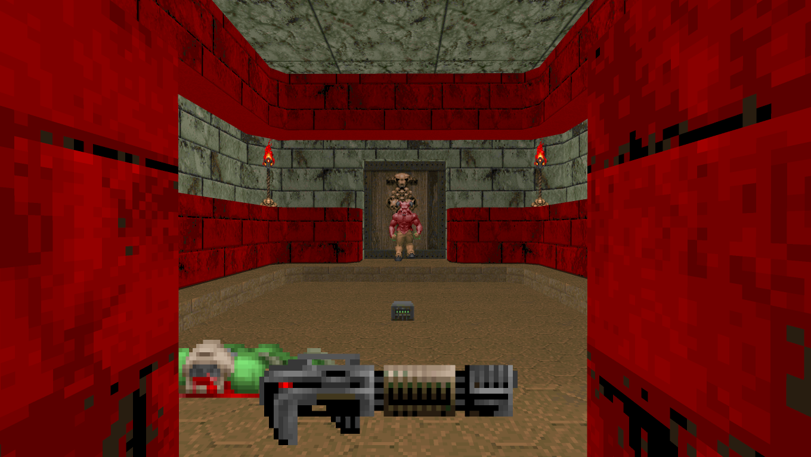
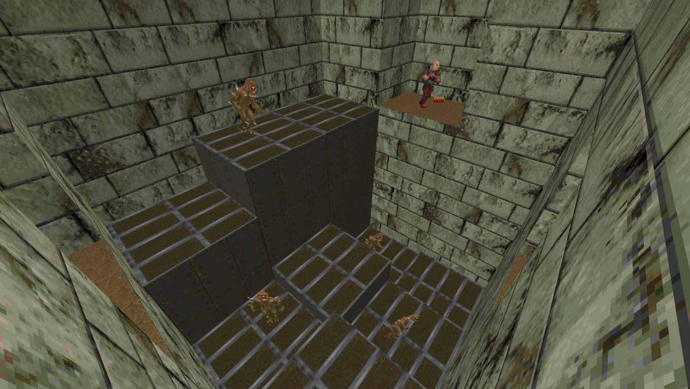
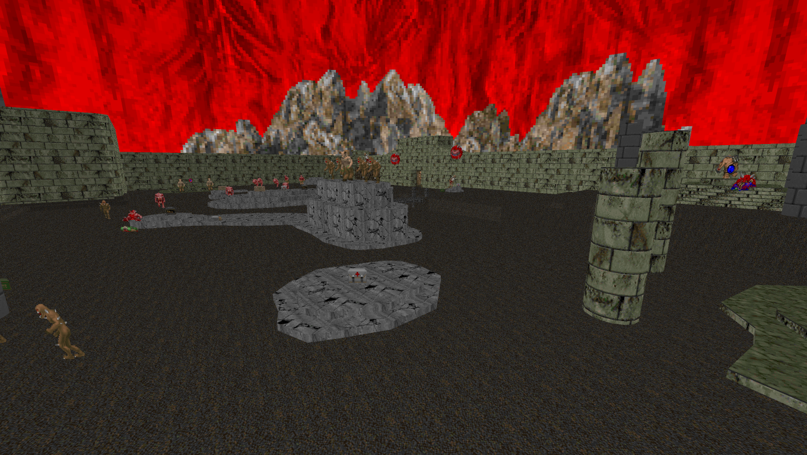

Aviso
Alguns mapas foram criados para projetos coletivos, como RAMP de DavidXNewton, eu perdi parte dos arquivos fonte dos mapas originais, então só poderei disponibilizar o projeto coletivo e mostrar o número do mapa que eu fiz até eu conseguir refazer o mapa como um standalone.
blank
blank
blank
Escape from Hell Castle



Escape from Hell Castle foi um dos primeiros mapas que eu fiz para o GZDoom, por causa disso
ele não possui nenhum conteúdo modificado (texturas, inimigos, etc) e utiliza funcionalidades de forma exepcional.
Porém é um mapa curto que possui uma dificuldade baixa.